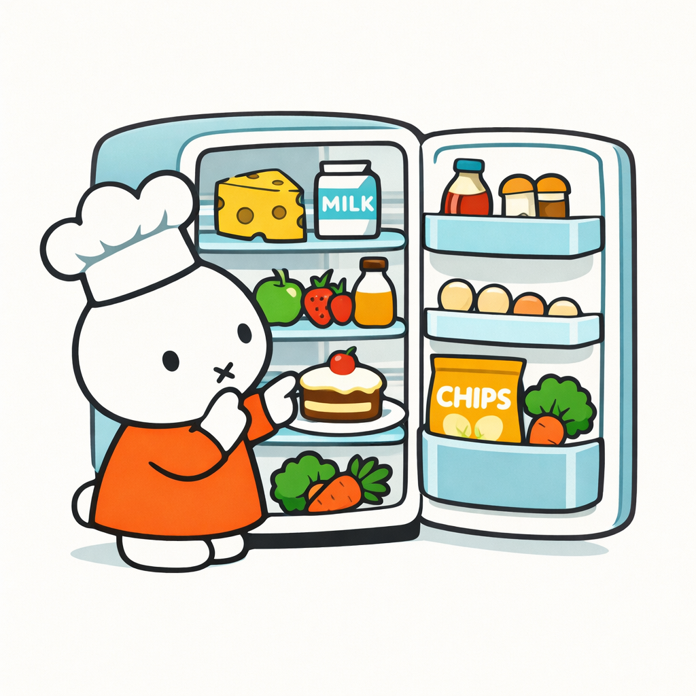
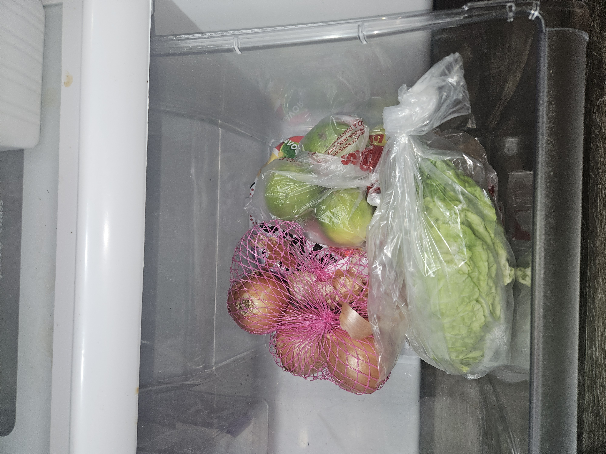
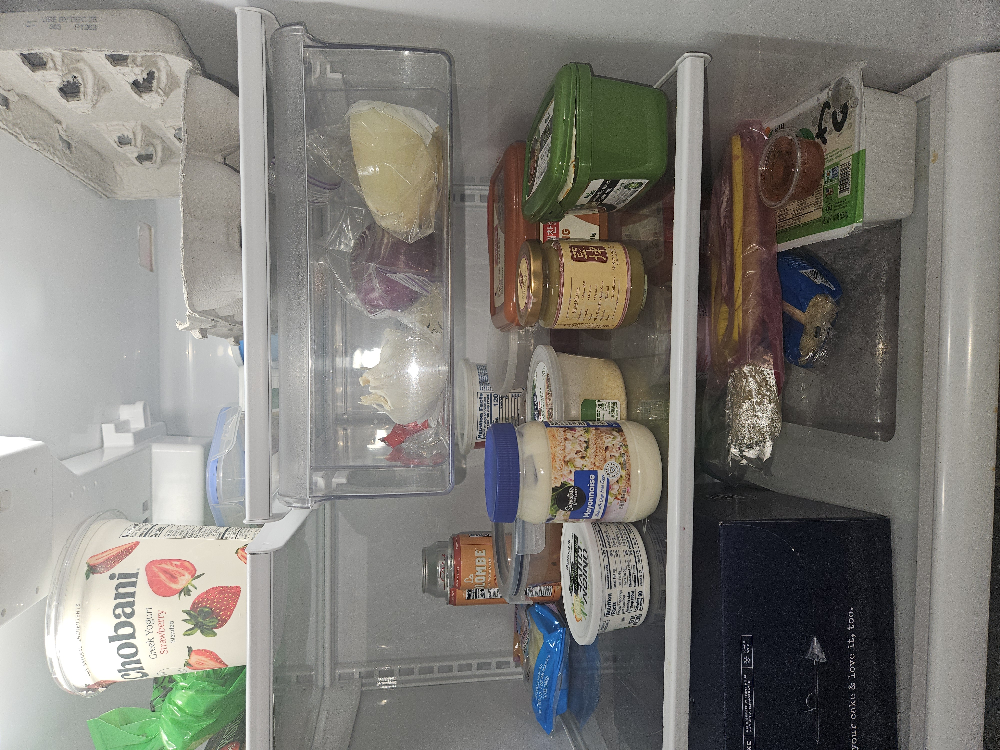
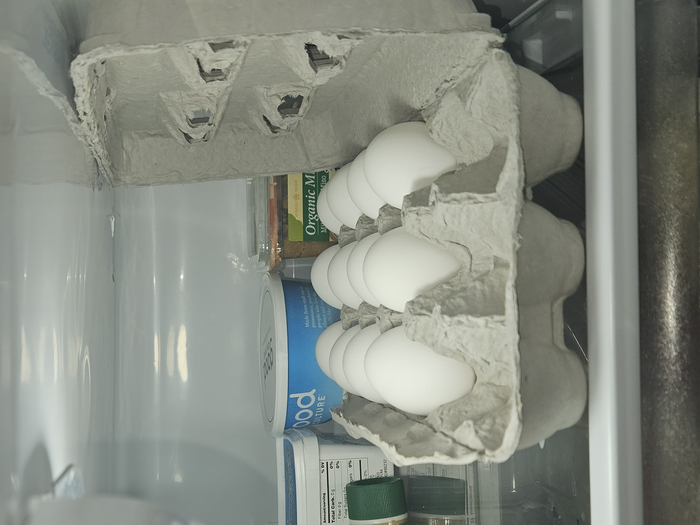
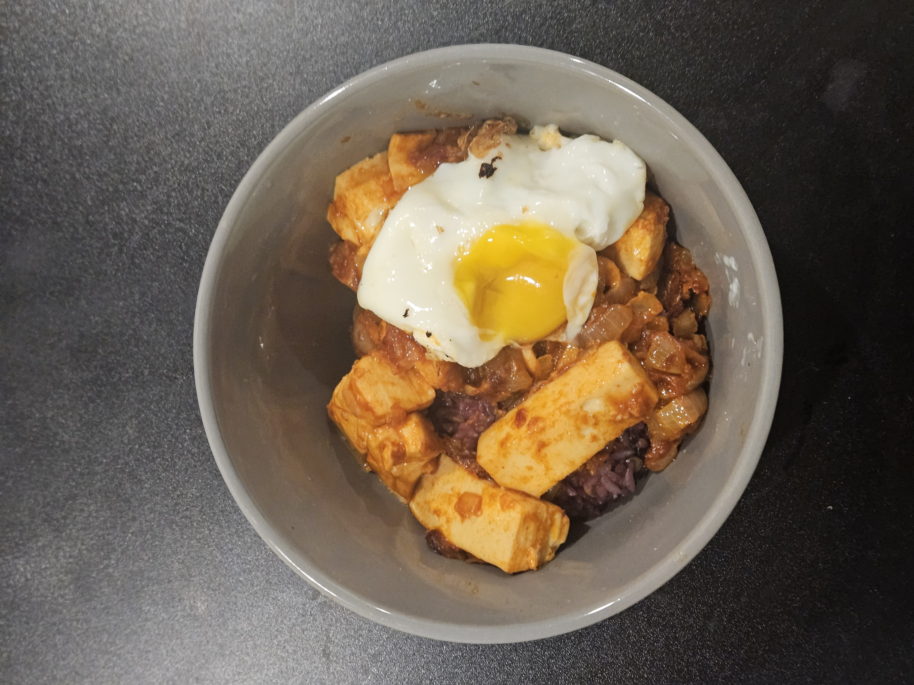

I was inspired by one of the project proposals in class which captured taking a photo of your fridge, where then the LLM analyzes your ingredients and helps propose recipes for you. In honor of this idea, I wanted to try using Gemini 2.5 Flash to see how its raw function compared to the outputs I remember seeing in class. As a lazy cooker myself who often combines whatever ingredients she has in the fridge to make any kind of edible food, I felt that this would be a fun activity to complete while also getting some dinner out of the way.
I used the following prompt to start this conversation to make some easy dinner plans: > You are a masterchef who can transform any item in the fridge into an easy-to-prepare and delicious meal. Please follow the following steps to give me an easy recipe to cook given the ingredients in my fridge: > 1. Analyze the images I upload. Identify any ingredients you can discern in the fridge and add it to an ingredient list. If you need clarification on any ingredients I have available, please ask me before continuing onto the next step. > > 2. Analyze the ingredient list and brainstorm 5 recipes that follow this criteria: > - easy to make and follow. > - has less than 10 steps. > - uses the airfryer, stovetop, microwave, or none. > - doesn’t require any additional ingredients. > - delicious. > > 3. Display the 5 meal options in an easy to real format that is concise, and ask me which recipe I’d like to make. Please answer if I have any follow-up questions.
The Fridge
I attached the following three images to the LLM chat:



Results
Gemini was able to identify the following items in my fridge: > * Proteins/Dairy: Eggs (at least 9), Chobani Strawberry Greek Yogurt, Good Culture Cottage Cheese, Tofu (firm/extra firm), Mayonnaise. > * Vegetables: Romaine lettuce, Red onion (halved), White/Yellow onions (bagged), Garlic (whole bulb), Green apples (or possibly pears/tomatillos—look like Granny Smith apples), Scallions (green bag). > * Condiments/Pantry Items: Organic Miso paste (white or awase), Gochujang (Korean chili paste), Doenjang (Korean soybean paste), Kaya (coconut jam), La Colombe canned lattes, Salsa (small container). > * Misc: A box that likely contains cake or leftovers (“your cake & love it, too”).
It also had some clarification questions: > 1. Are those green apples in the crisper drawer, or a different fruit/vegetable? > 2. Do you have any staples like rice, soy sauce, oil, or salt/pepper? (I will assume you have basic oil and salt for the recipes).
I responded that (1) I had limes in my crisper drawer, and (2) I did indeed have those staple ingredients.
Then, Gemini updated my meal options and gave me the following: > 1. Crispy Gochujang Tofu & Rice,Stovetop,“Pan-seared tofu cubes glazed in a spicy-sweet gochujang and soy sauce, served over hot rice with a squeeze of lime.” > 2. Miso-Butter Poached Eggs,Stovetop,“Eggs poached or soft-boiled, served over rice seasoned with miso, soy sauce, and a lime-zest finish.” > 3. Spicy Mayo Tofu Lettuce Wraps,Stovetop,“Crumbled tofu browned with onions and garlic, tossed in a zesty lime-mayo-gochujang sauce and served in lettuce cups.” > 4. Golden Egg Fried Rice,Stovetop,“A classic: rice fried with onions, garlic, and scrambled eggs, seasoned with soy sauce and brightened with fresh lime juice.” > 5. Savory Miso-Gochujang Tofu Bowl,Microwave/Stovetop,“A warm bowl of rice topped with tofu and a rich”“umami bomb”” sauce made from miso, doenjang, and soy sauce.”
I decided to go with option 5, which then allowed me to access the full recipe and steps: > #### The Savory Miso-Gochujang Tofu Bowl > * Prep time: 5 minutes > * Cook time: 10 minutes > * Serves: 1-2 > > ##### Ingredients > * Tofu: 1 block (pressed slightly with a paper towel to remove excess water) > * Base: 1-2 cups cooked Rice > * Aromatics: 1/2 Onion (diced) and 2 cloves Garlic (minced) > * The Sauce: 1 tbsp Miso, 1 tsp Gochujang (more if you like heat), 1 tbsp Soy Sauce, and a splash of water. > * Finish: Fresh Lime juice. > > ##### Instructions > 1. Prepare the Sauce: In a small bowl, whisk together the miso, gochujang, soy sauce, and 2 tablespoons of water until smooth. > 2. Sauté Aromatics: Heat 1 tablespoon of oil in a pan over medium heat. Add the diced onions and cook until softened (about 3 minutes). > 3. Add Garlic: Stir in the minced garlic and cook for 30 seconds until fragrant. > 4. Sear Tofu: Crumble the tofu directly into the pan with your hands (or cube it if you prefer). Cook for 4-5 minutes, stirring occasionally, until the edges get a little golden. > 5. Glaze: Pour the sauce mixture over the tofu and onions. Stir well to coat everything evenly. > 6. Simmer: Let it cook for another 1-2 minutes until the sauce thickens and clings to the tofu. > 7. Prepare Rice: If your rice isn’t hot, microwave it now with a damp paper towel over the bowl to keep it fluffy. > 8. Assemble: Scoop a generous portion of rice into a bowl and top it with the savory tofu mixture. > 9. The Finisher: Squeeze half a lime over the top right before eating. The acidity cuts through the richness of the miso perfectly.
Review

I followed the recipe faithfully–which is something I usually don’t do!–and had the following end result! Though there was one exception; I added an egg on top out of personal preference. Now, it’s onto one of the most important sections of this blog: judging the food. I will be judging this AI recipe based on the following criteria: - Effort: How easy was it to prepare? - Taste: Is it tasty? (from my personal preference) - Timeless: Would I make it again?
First, in terms of effort, I would consider rate this a 4.5/5 because all I really needed to do was stir-fry the different ingredients on the stovetop.
Now, onto flavor, the flavor was pretty much as I expected it to be. Particularly, the gochujang was a little overpowering and made a strong impression on the flavor of the general dish, mainly because it was in equal ratio with the miso. If I were to modify this recipe, I would have decreased the amount of gochujang, and also added another flavor profile–like sweetness by adding some honey–into the dish to increase the depth of flavor. In addition, the lime was an interesting choice that I never would have considered prior to this recipe and was a little overpowering for my taste. After all, it was an entire half of a lime in the one bowl. However, I must say that I was pleasantly surprised by its flavor, and if it was added it a slightly smaller quantity, I would have enjoyed it much more. Therefore, I give this dish a 3.2/5.
Lastly, for timelessness, I would say that this is a type of dish that I usually commonly make at home already on my lazy days. This dish is the amalgation of throwing things in together, and that truly aligns with my existing cooking ethos. However, I don’t find myself following this exact recipe again. Perhaps with some of the modifications I touched on above, but I would consider it to be a different dish at that point. So, not to say that this dish was bad persay, but it could be improved, Thus, I would not cook this dish again.
My Reflection
If the LLM had more memory and was personalized to my flavor profile, kept track of ingredients in my fridge, and was familiar with my cooking habits and methods, I can see how it could have more efficient performance–as done in the class project. However, despite not having much other information besides my prompt and a couple of pictures from my fridge, I am pretty impressed with the results that Gemini gave me. I do wonder though how these recipes are retrieved, whether they are a combination of recipes in the LLM database or if they are existing recipes out in the world. Either way, I might be open-minded to trying more AI-generated recipes in the future, perhaps even following a more complex one in the future.